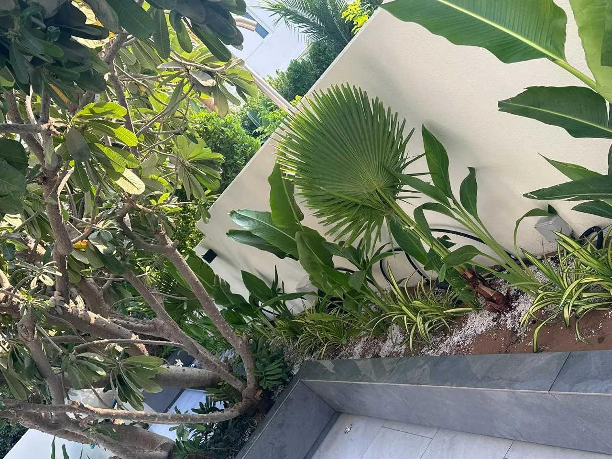

Start with how you want to live outside
Before choosing a single plant or paving stone, decide what the garden is for. Family dinners outdoors? A pool the children can use all afternoon? A quiet place for morning coffee? A garden designed around real habits gets used. One designed around a picture often does not.
In Dubai, two questions come first:
- Where will the shade be between May and October? Shade decides where you can sit, so it should decide the layout.
- Where does the evening light fall? Most outdoor living here happens after sunset, so the garden has to be designed for the night as well as the day.
Ideas by community
Arabian Ranches
Arabian Ranches is one of Dubai's most established villa communities, and its Mediterranean and Spanish-influenced villas suit warm, textured gardens. Many gardens here are now mature and ready for renewal.
- Warm-toned natural stone, such as travertine, for paths and terraces, to match the render and roof tiles.
- Olive trees, bougainvillea and frangipani for a Mediterranean feel that copes with the heat.
- A shaded pergola or loggia off the living room, extending the house into the garden.
- Renewing older irrigation, lawns and overgrown planting, while keeping the mature trees that give the garden its character.
Dubai Hills Estate
The contemporary villas of Dubai Hills Estate call for cleaner lines and a more architectural garden.
- Large-format stone or porcelain paving that continues the line of the interior floor outside.
- Structured planting: clipped hedges, rows of grasses and a single sculptural specimen tree rather than many small ones.
- A linear pool or water feature aligned with the main living space.
- Concealed lighting that washes walls and trees rather than lighting the garden from above.
Jumeirah Park
Jumeirah Park is known for generous plots, which give room to create distinct areas within one garden.
- Zone the garden: a pool terrace, an outdoor kitchen and dining area, a lawn for the children and a quieter planted corner.
- Use planting and level changes to divide the zones, so the garden reveals itself as you walk through it.
- Plant mature palms and shade trees early, so they establish while the rest of the garden is built.
Palm Jumeirah and coastal villas
Beachfront gardens face salt-laden wind, sandy soil and strong reflected light.
- Choose salt- and wind-tolerant plants such as date palms, bougainvillea and seashore paspalum lawns, and shelter more delicate plants behind walls or hedges.
- Specify stone, metal and fixings that are suitable for a marine environment.
- Frame the sea view rather than blocking it: keep planting low towards the water and taller at the sides.
Whatever the community, most changes to a villa garden need approval from the master developer first. Our guide to pool and landscaping approvals in Dubai explains what is involved.

Ten ideas that work in any Dubai garden
- A pergola or pavilion over the dining area, ideally with ceiling fans and lighting built in.
- An outdoor kitchen in stone and weather-resistant materials, close enough to the house to be practical.
- A sun shelf in the pool, with in-water loungers, so you can cool off without swimming. See what a pool costs in Dubai.
- Layered, climate-suited planting: trees, then shrubs, then ground cover, so the garden looks full and shades its own soil.
- One specimen tree as a focal point, placed where it is seen from the main living room.
- Pale natural stone underfoot, which stays cooler than dark surfaces in the sun.
- Make use of the side returns. Narrow side gardens can become planted walkways rather than storage space.
- Planted screens for privacy instead of higher walls, which communities rarely allow.
- Lighting designed as a scheme: uplit trees, low path lights and underwater pool lighting.
- Lawn sized to its use. Read artificial or real grass in Dubai before deciding.
Plan the garden as one project
The gardens that disappoint are usually built in stages by different companies: the pool by one, the paving by another, the planting last, with whatever budget is left. Designing pool, hardscape, softscape, shade and lighting together, and building them with one team, is what makes a garden feel resolved.
Our softscape is led by co-founder Banu, who selects each plant for the light, heat and water of the individual garden. Meet Banu or see our exterior services.
Common questions
What plants grow well in Dubai villa gardens?
Date palms, bougainvillea, frangipani, olive trees and many tropical shrubs do well when they are planted in improved soil with good irrigation. The right choice depends on sun, shade and exposure, especially for coastal gardens on Palm Jumeirah.
Do I need approval to landscape my villa garden in Dubai?
Most master developers require approval for significant changes such as pools, pergolas, structures, boundary walls and changes to the front garden. Simple replanting within existing beds is often allowed without it, but always check your community's rules first.
How long does a villa landscaping project take?
A garden without a pool is usually quicker than one with a pool. Most villa pools take around three to four months from approved design to handover. Design and community approvals come before construction.
How can I make my garden usable in summer?
Plan the shade first, with a pergola, pavilion or trees over the main seating area. Then add pale stone surfaces, a pool with a chiller and a sun shelf, ceiling fans or misting, and lighting for evenings.